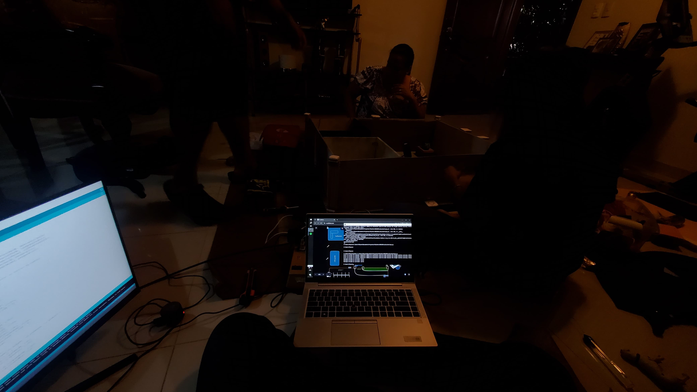

Proyecto M.U.S.E.O

Este nace a partir de diseñar un diseño de un museo que implemente la tecnología para solucionar problemas de seguridad, eficientizar procesos a través de sistemas y programas y priorizar la comodidad de los visitantes y, sobre todo de los trabajadores.
Para esto desarrollamos una maqueta de un museo que se ayuda de ciertos sensores conectados a una protoboard y a un Arduino que funciona como el cerebro de este proyecto, donde se guarda el código que ayuda a que todos los sensores puedan interconectarse. Este proyecto cuenta con una aplicación móvil que permite a los usuarios poder interactúa con el proyecto desde una aplicación. El mismo integra las siguientes funciones partiendo desde el apartado principal.
Dashboard
En este Panel De Control tenemos las principales herramientas de monitorio que necesitamos como puede ser el estado de la alarma, la cantidad de personas en tiempo real que han entrado al museo a los largo del día y la cantidad de luces que tenemos encendidas, así como un botón para abrir el servo motor responsable de la entrada al museo de forma totalmente remota.
Sistema De Monitoreo Avanzado
El sistema de monitoreo avanzado nos permite controlar todo el sistema de alarma de forma totalmente remota y de forma segmentada, de forma que, si queremos activar/desactivar la alarma de la sala de conferencias, pero sin desactivar la seguridad del museo completo, pues podemos hacerlo con un solo botón. Aun así, se pueden encender o apagar el sistema de forma completa con un solo botón en caso de hacerlo.
Si la alarma está activa eso activa los LEDS de color rojo y activa todos los sensores de movimientos y proximidad que tiene el sistema, de forma que ante cualquier movimiento se manda una señal al buzzer quien se encarga de sonar en una secuencia de 4x1.
Sistema De Logs
En este proyecto tenemos un sistema de logs que se divide en dos partes principales, los logs de la alarma y logs generales. En los logs de la alarma se guarda exclusivamente los eventos que han sido generado desde la alarma, como puedes ser cualquier movimiento que se produzca tanto si la alarma está activa o no. Lo que nos permite poder visualizar los eventos o movimientos que han sucedido segmentado por el lugar donde sea detectado, el estado de la alarma y la fecha/hora.
Luego tenemos los logs generales donde se guardan todos los eventos externos a la alarma, como pueden ser cuando se encienden/apagan las luces, nombrando el lugar dentro del museo donde está presente el evento, la fecha/hora y el ID para poder identificarlos y poder filtrarlos después.
Como comunicarse con un arduino desde python?
Una de las principales formas de hacer este proceso es a través del puerto serial que poseen los Arduinos. Es como si nosotros abriéramos nuestra ventana del monitor serial y enviamos comandos preconfigurados en el código de Arduino. La diferencia es que esto lo haremos desde Python utilizando la biblioteca de PySerial.
Ejecuta el siguiente comando en tu terminal para instalar la biblioteca
pyserial:
Encender un led desde python
Para esto vamos a crear un código en python que nos permita utilizar 0 y 1 para encender o apagar un led. Para esto desde arduino vamos a subir el siguiente código que lo que hace es que al recibir 0 o 1 desde el puerto serial, enciende un led.
Y ahora desde python vamos a implementar un codigo que se encargue de mandar esos valores de 0 y 1 por el puerto serial pero con la particularidad de que tenemos que hacer una funcion que nos permita enviar los caracteres como bytes. La funcion debe ser parecida a la siguiente:
Luego de esto declaramos un bucle que nos permita enviar mensajes desde la terminal, y salir del programa. (Cambia 'COM3' por el puerto correcto en tu sistema (Linux suele ser /dev/ttyUSB0 o similar))
Codigo del proyecto
Grafica.py
servidor.py
Un problema que me ocurrio al programar en python para arduino era que no podia ocupar los puertos COM para mandar datos desde diferentes programas o terminales y peor era si queria tener una a escucha y otro para mandar como lo necesitaba el proyecto. Asi que con mis conocimietos en python/redes desarrolles un pequeño servidor que es el unico que tiene acceso de forma directa al arduino. Esto me permitio tener cuantos programas necesitara conectados al servidor y que el arduino me permita conectar todo simultaneamente y que todo me funcione ya que el arduino solo conoce el servidor (Si tiene una mayor carga o lo quieren eficientizar seria bueno un algoritmo que decida que enviar primero segun la importancia e impacto pero esto si me lo guando).
Aplicacion movil
Una idea que salio el mismo dia de la presentacion era poder incluir una aplicacion movil y como prototipo rapido, decidi crear uno que nos permita conectarnos desde la web en cualquier dispositivo movil con el cual se pueda interactuar con todo el museo. (tambien conectada al servidor)